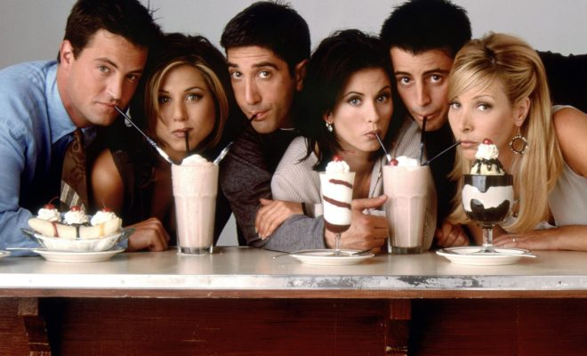
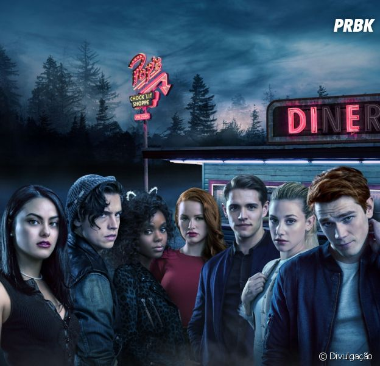

Séries
Assim como a maioria das pessoas, eu sou uma grande admiradora de séries. Sempre que tenho algum tempo livre, eu aproveito pra maratonar as minhas séries favoritas e até mesmo algumas que eu ainda não conheço.
Essas são minhas três séries favoritas da vida:

